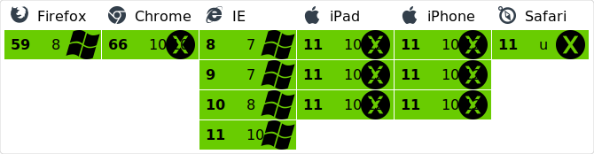

Chat with Node.js + Socket.io
Icaro Caldeira Carreira / @icarcal
Icaro Caldeira Carreira
- CTO @ It Model
- 8+ XP em desenvolvimento
- Community manager
- Speaker
Socket.io
O que é?
“THE FASTEST AND MOST RELIABLE REAL-TIME ENGINE“
“It enables real-time bidirectional event-based communication“
Framework para real-time apps escrito para o Engine.io
Como o socket.io funciona?
- Primeiro o socket.io decide qual transporte vai utilizar
- xhr-polling
- jsonp-polling
- websocket
- Em seguida é feito o handshake(via POST) entre cliente e servidor e são gerados os seguintes dados:
- Id da sessão
- Número de segundos para o próximo heartbeat
- Número de segundos que a conexão ficará aberta se não houver nenhum transporte de dados nessa conexão
O comportamento da conexão após o handshake é determinada pela layer de transporte
Após este processo já é possível efetuar a troca e informações entre cliente e servidor
Pooling e Long pooling?
Pooling
É a técnica onde o cliente consulta de x em x tempo por alguma mudança de status no servidor
Long pooling
O cliente envia apenas uma requisição ao servidor que a mantém aberta até o momento de retornar dados.
Quando os dados são retornados ao cliente, ele envia uma nova requisição ao server que novamente a mantém aberta.
O que é um websocket?
É uma conexão persistente (um túnel) entre o cliente e o servidor.
Possui por característica uma url com prefixo ws: ou wss:
Socket.io features
Confiabilidade
Funciona mesmo na presençca de load balancers, proxies, firewalls e anti-vírus
Suporte à reconexão
O socket.io tentará sempre efetuar a reconexão em caso de queda do servidor
Detecção de desconexão
Mecanismo de heartbeat
Suporte à arquivos binários
Qualquer aruivo pode ser enviado, até mesmo buffers(node.js) e blobs(browser)
API simples
io.on('connection', function(socket){
// emit an event to the socket
socket.emit('request', /* */);
// emit an event to all connected sockets
io.emit('broadcast', /* */);
// listen to the event
socket.on('reply', function(){ /* */ });
});
Cross-browser
Suporte à multiplexing
O socket.io permite você criar namespaces, que funcionam como canais mas compartilham a mesma conexão
Suporte à salas
Dentro de cada namespace, você ainda pode criar salas, que os usuários podem entrar ou sair.
Esta feature é útil para que você possa fazer o envio de uma mensagem para um erto grupo de usuários
Demo
Alternativas
Pusher
Faye
Firebase
Referências
https://github.com/socketio/engine.io
https://github.com/socketio/socket.io
https://socket.io/docs/
https://www.pubnub.com/blog/2014-12-01-http-long-polling/
https://codeburst.io/why-you-don-t-need-socket-io-6848f1c871cd/
http://websocket.org/aboutwebsocket.html
Dúvidas?

@icarcal
Obrigado ♥